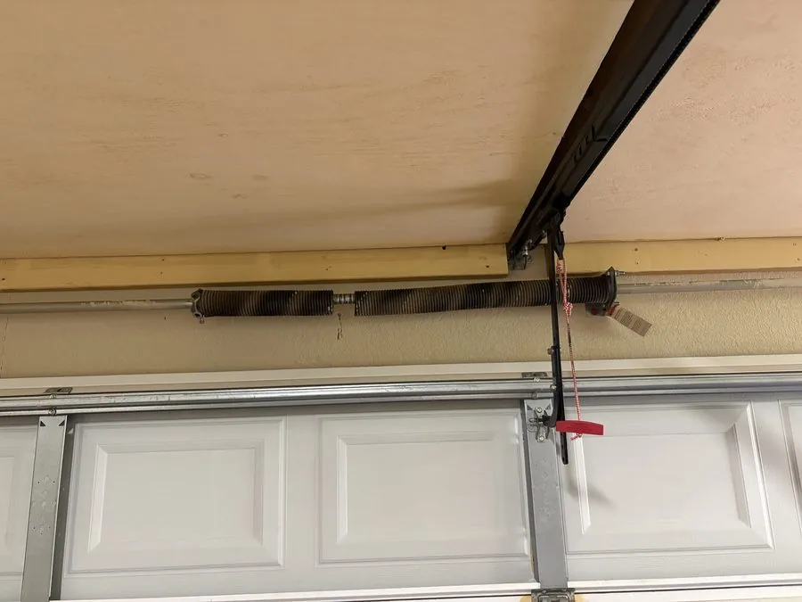

A broken torsion spring is one of the most common, and most dangerous, garage door failures. When a spring snaps, your door can become completely inoperable in seconds, leaving your vehicle trapped or your home unsecured. The good news: springs usually give you warning signs before they fail entirely.
Never attempt to repair or replace garage door springs yourself. Torsion springs are under extreme tension and can cause serious injury. Always call a certified technician.

A torsion spring system showing the gap from a broken spring. Never attempt repairs yourself, always call a certified technician.
1. The Door Feels Unusually Heavy
Springs counterbalance the weight of your garage door. If a spring is weakening or partially broken, the door will feel much heavier than normal when you try to open it manually. A balanced door should lift easily with one hand, if it takes real effort, that's a red flag.
2. You Hear a Loud Bang
When a torsion spring snaps, it makes a sound like a gunshot or loud bang, often described as someone throwing something heavy in the garage. If you hear this sound and your door won't open, your spring has likely broken.
3. There's a Visible Gap in the Spring
Visible gaps in a torsion spring coil indicate a broken spring that needs immediate replacement.
Look at the springs above your garage door. A broken torsion spring will have a visible gap, typically a separation of 2 inches or more in the coil. If you see this, don't use the door until it's repaired.
4. The Door Opens Crooked
If one spring fails in a two-spring system, the door will rise unevenly, one side will be higher than the other. This puts enormous strain on the cables, tracks, and opener, and can cause secondary damage quickly.
5. The Opener Strains or Fails
Your garage door opener is designed to work with a properly functioning spring system. If the opener is straining, reversing immediately, or triggering its safety stop when trying to open the door, a failing spring is often the cause.
6. Cables Are Loose or Hanging
Broken springs cause the cables to go slack or hang freely on the sides of the door. Loose cables are both a symptom and a danger, they can snap or tangle, causing additional damage.
7. The Spring Looks Stretched or Worn
Over time, springs lose tension and may appear stretched, elongated, or corroded. If the coils look widely spaced or the spring has visible rust, it's nearing the end of its lifespan and should be replaced proactively.
How Long Do Garage Door Springs Last?
Standard torsion springs are rated for approximately 10,000 cycles. For an average household opening the door 4 times a day, that's roughly 7 years. High-cycle springs rated for 25,000-50,000 cycles are available and worth the investment.
Suspect a Spring Issue? We Can Help.
Our Austin technicians are available 24/7 for spring inspections and emergency replacements. Don't risk injury, let the pros handle it.
Call (512) 947-4451